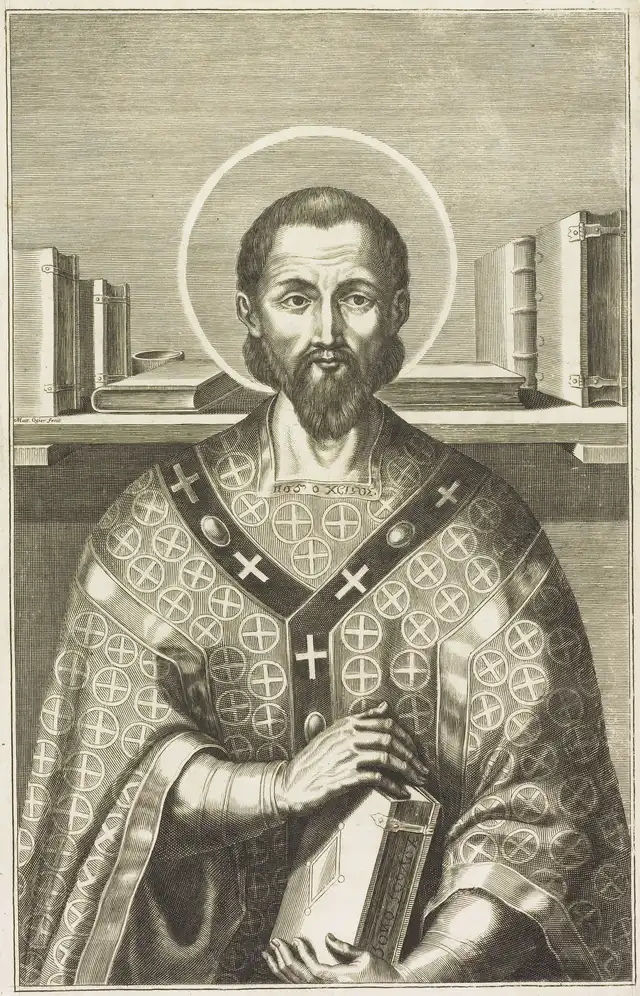

Ellinas Multimedia's documentary on the life of Saint John Chrysostom, from Antioch to exile (about 24 minutes). Watch on YouTube.
St. John Chrysostom
Antioch's greatest preacher, called "Golden Mouth," dragged from his quiet church to be archbishop of Constantinople, where he preached against luxury at the empress's own court - and was twice exiled for it. He died on the road to exile, and his last recorded words were a hymn: "Glory to God for all things." He is a Father and Doctor of the universal Church, and this page is his story, his teaching in his own words, and where to watch his life told well.

At a Glance
Who: John of Antioch (c. 349-407), called Chrysostom - "Golden Mouth" - priest of Antioch and archbishop of Constantinople.
Known for: the greatest preaching of the early Church - hundreds of surviving homilies on Matthew, John, Romans and Genesis; fearless preaching on wealth and poverty; the liturgy still prayed in his name in the Byzantine churches; and his death in exile for refusing to flatter power.
Status: venerated as a saint since his death; one of the great Doctors of the universal Church and, with Basil and Gregory Nazianzen, one of the Three Holy Hierarchs of the East. His feast in the Western calendar is September 13; in the East, November 13.
The honest fine print: like Augustine, he was recognized by the Church's living memory long before the modern canonization process existed. His relics were brought back to Constantinople in triumph just thirty-one years after he died in exile.
His Life (c. 349-407)
He was born in Antioch around 349, the son of a widowed mother, Anthusa, who raised him in the faith. He studied rhetoric under Libanius, the most famous pagan teacher of the age, then turned from a brilliant legal career to the Church, was baptized, and spent six years as a monk in the mountains outside the city - four under an ascetic elder, two alone in a cave, memorizing Scripture. His health broke, and he returned to Antioch, where he was ordained a deacon in 381 and a priest in 386.
For twelve years he preached at Antioch's great church, and the city could not get enough of him. His homilies walked through Scripture verse by verse - Matthew, John, Genesis, the letters of Paul - and landed every text on daily life: how to pray, how to raise children, why the poor are the true image of Christ. When a tax riot threatened the city with destruction in 387, his series of sermons On the Statues held the population steady through Lent until the emperor's pardon came. It was here that later generations gave him the name Chrysostomos - the golden-mouthed.
In 398 he was taken - practically against his will - to be archbishop of Constantinople, the capital. He reformed the clergy, cut the episcopal household's spending to fund hospitals and the poor, and preached the same sermons he had preached in Antioch: that Christ is hungry in the man at the door. At the imperial court this was heard as an attack. In 403 a packed gathering of bishops, the Synod of the Oak, deposed him; the city erupted, and he was recalled within days. In June 404 he was exiled for good - first to Cucusus in Armenia, from where he wrote a stream of letters that circulated like homilies, and then ordered still further east. He died on the forced march, at Comana in Pontus, on September 14, 407. His disciple Palladius records the last words: "Glory to God for all things." In 438 the emperor Theodosius II - son of the empress who had exiled him - had his relics brought back to Constantinople and publicly asked his forgiveness.
The Golden Mouth
More of Chrysostom survives than of almost any other Father: some seven hundred homilies, plus treatises and hundreds of letters from exile. His genius was application - he refused to let Scripture stay in the sanctuary. Christ on the altar and Christ at the door were, for him, the same Christ, and he said so to the wealthiest congregation in the empire. That conviction cost him his see and his life, and it is why the Church reads him still.
His mark on worship is as deep as his mark on preaching. The Divine Liturgy attributed to him - the Liturgy of Saint John Chrysostom - remains the ordinary liturgy of the Byzantine tradition, prayed every Sunday across the Eastern churches, Catholic and Orthodox alike. Antioch, where he was formed and where he preached for twelve years, is also the mother see of the Maronite Church - Saint Charbel's own tradition grows from the same Antiochian soil that formed the Golden Mouth.

His Teaching, in His Own Words
"Glory to God for all things." His last recorded words, spoken on the road into his final exile and remembered by his disciple Palladius. A man stripped of his see, his city, and his strength, ending with doxology - the whole of his preaching in one sentence.
"Would you honor the body of Christ? Do not neglect him when he is naked." From his fiftieth homily on the Gospel of Matthew. He continues: the one who said "This is my body" also said "I was hungry and you gave me no food." Honor Christ in church, he preached, and honor him first outside it, in the poor.
"The road to hell is paved with the bones of priests and monks, and the skulls of bishops are the lamp posts that light the path." A stern word long attributed to him on the weight of ministry. The exact phrasing belongs to later tradition rather than to a traceable text of his, so we quote it as the tradition hands it down - the warning itself is thoroughly his.
"When you see the rich man wasting his goods, do not say that the fault lies in the wealth, but in the will." From his homilies on Lazarus and the rich man. His constant line on money: possessions are not the problem - what love does or fails to do with them is.
Watch: St. John Chrysostom
Video hosted on YouTube by Ellinas Multimedia and Christian Biographies. Each embed uses youtube-nocookie.com - no YouTube cookies are set unless you press play - and each video was verified playable before embedding.
Christian Biographies' telling of the Golden Mouth - the preacher of Antioch who took on an empire (about 12 minutes). Watch on YouTube.
These videos are hosted by their channels and were not produced by this site.
Frequently Asked Questions
Why is he called "Chrysostom"?
Chrysostomos is Greek for "golden-mouthed" - a title later generations gave him for his preaching. In his own lifetime he was simply John of Antioch, or John of Constantinople.
What did he preach about?
Above all, that Scripture lands on daily life. His homilies walk through Matthew, John, Genesis, and Paul's letters verse by verse, and he returns constantly to prayer, family life, humility - and to the poor, in whom, he insisted, Christ is personally present. Preaching that to the wealthiest court in the empire is what eventually cost him his see.
Is he important to Eastern Christians?
Enormously. He is one of the Three Holy Hierarchs of the East (with Basil the Great and Gregory Nazianzen), and the Byzantine Divine Liturgy prayed in his name remains the ordinary Sunday liturgy of the Eastern churches, Catholic and Orthodox alike. Antioch, where he was formed and preached, is also the mother see of the Maronite Church.
How did he die?
In exile. Condemned at the Synod of the Oak in 403, briefly recalled, then banished for good in 404, he was kept moving from one remote posting to the next. He died on a forced march at Comana in Pontus on September 14, 407, with "Glory to God for all things" as his last recorded words.
Was his exile ever reversed?
Not in his lifetime - but the Church and even the imperial house repented of it. In 438, thirty-one years after his death, the emperor Theodosius II, son of the empress who had exiled him, brought his relics back to Constantinople in triumph and publicly asked his forgiveness.
Sources
- Benedict XVI, general audience on Saint John Chrysostom, part one (September 19, 2007) - the life: Antioch, the monastic years, the priest-preacher, the archbishop of Constantinople
- Benedict XVI, general audience on Saint John Chrysostom, part two (September 26, 2007) - the exile, the death, and the writings
- The homilies of Saint John Chrysostom on Matthew, John, and the letters of Paul (public-domain translations at New Advent) - including the fiftieth homily on Matthew and the homilies on Lazarus
- Palladius, Dialogue on the Life of St. John Chrysostom - the account of his exile and his last words